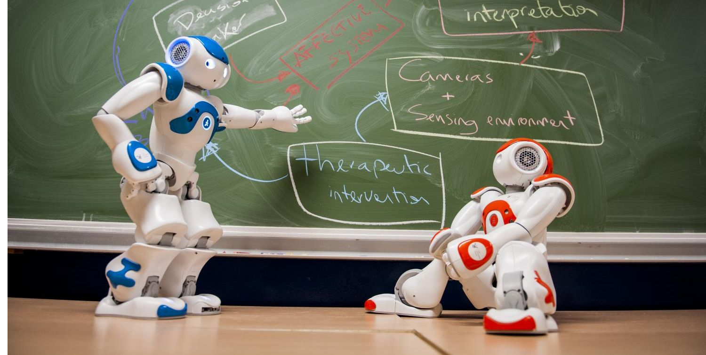
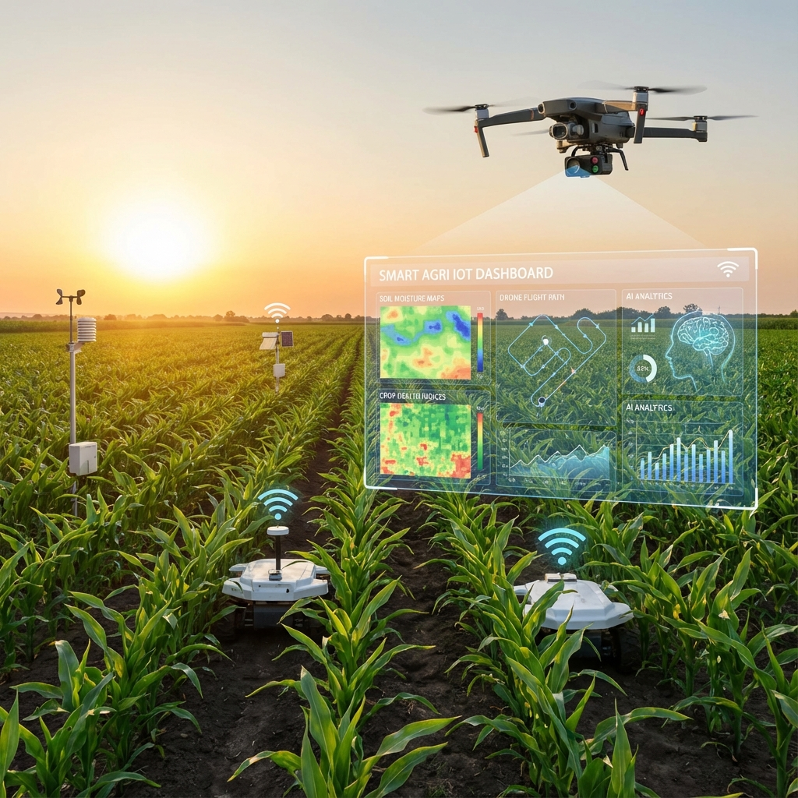
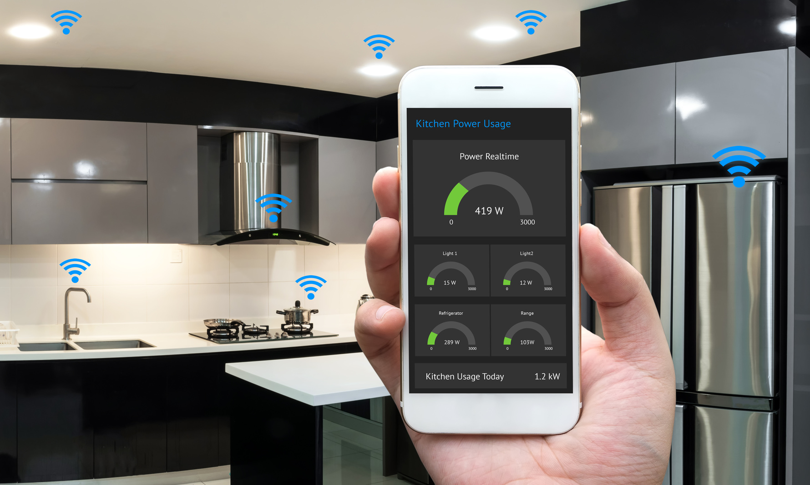
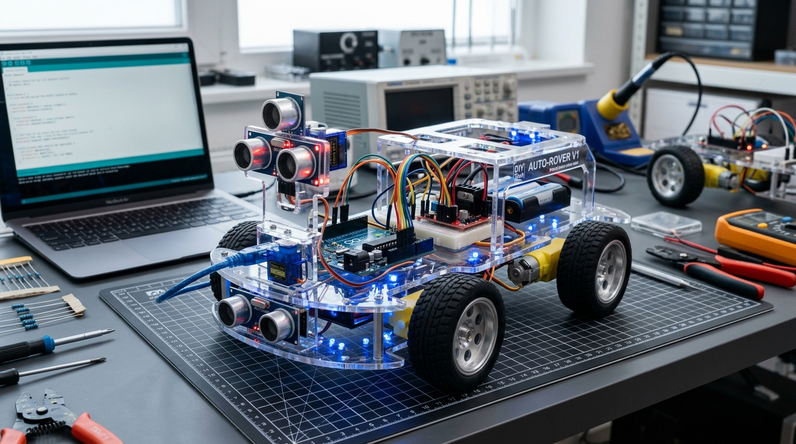

Projets Marquants
Sélection de réalisations complètes combinant conception matérielle, micrologiciels et dashboards
AXEL - Robot Semi-Humanoïde Intelligent
Plateforme robotique modulaire semi-humanoïde unifiant vision OpenCV, cinématique 23 DOF MoveIt 2, application desktop Electron 3D et voix Darija 🇹🇳.

BideyaBoost — Plateforme d'Orientation Universitaire
Plateforme éducative interactive et écosystème d'orientation académique pour les étudiants tunisiens avec tests psychométriques, mentorat et roadmap carrière.
Surveillance Médicale & Signes Vitaux
Station de télémédecine mesurant SpO2, fréquence cardiaque et température en temps réel avec tableau de bord web pour alertes cliniques.

Robot Autonome & Cartographie SLAM
Robot mobile à navigation autonome, évitement dynamique d'obstacles et cartographie lidar 360° en environnement inconnu.

IA de Diagnostic des Maladies des Plantes
Réseau de neurones convolutionnel (CNN) sous TensorFlow pour la détection automatisée et précoce des pathologies végétales.

Maison Intelligente Domotique 3 Étages
Système complet avec ascenseur motorisé, garage sécurisé par RFID, sécurité incendie/gaz et balcon anti-pluie automatique.

Voiture Autonome à Capteurs Ultrasoniques
Véhicule miniature ultra-réactif avec scan rotatif 180°, calcul de trajectoire optimal et évitement de collision sans latence.